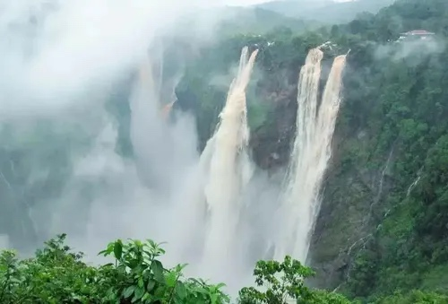
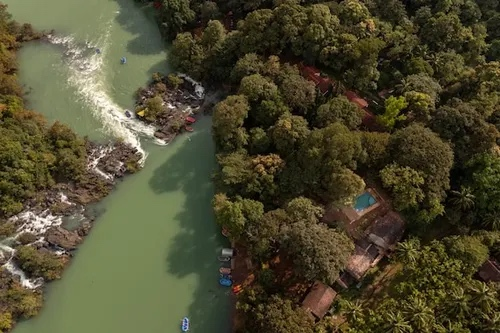
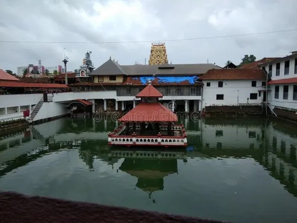
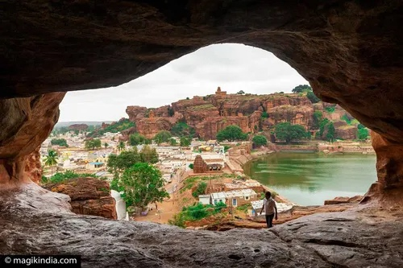
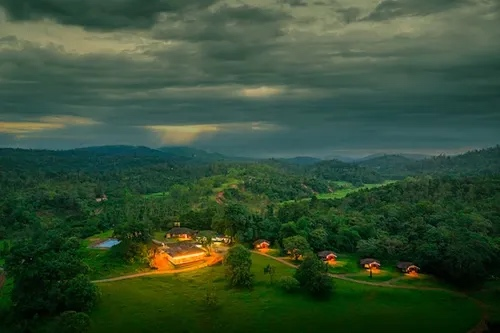

Explore Karnataka Your Way
Discover Karnataka through AI-curated experiences built around the way you want to travel.
Spiritual Karnataka
Explore Karnataka's famous temples, pilgrimage centers, coastal shrines and peaceful spiritual destinations.
Plan with AI ✨
Nature & Waterfalls
Roaring cascades, pristine Western Ghats rainforests, scenic river valleys, and lush green nature trails.
Plan with AI ✨Coastal & Beach Escapes
Golden Arabian Sea beaches, Om Beach cliff walks, St. Mary's volcanic islands, and fresh Karavali seafood.
Plan with AI ✨Hill Station Getaways
Misty coffee plantations, highest peaks like Mullayanagiri, cool mountain breeze, and scenic sunset viewpoints.
Plan with AI ✨Heritage & History
UNESCO World Heritage ruins of Hampi, Badami rock-cut caves, Pattadakal monuments, and royal Mysuru architecture.
Plan with AI ✨Wildlife & Safari
Thrilling jungle safaris in Bandipur, Nagarhole, and Kabini. Encounter wild Asian elephants, leopards, and Bengal tigers.
Plan with AI ✨
Adventure Karnataka
Kali River white-water rafting, rugged Western Ghats trekking, forest canopy ziplines, and outdoor river camping.
Plan with AI ✨
Food & Culture
Authentic Udupi vegetarian thalis, Neer Dosa, Mangalorean ghee roast, steaming filter coffee, and rich folk traditions.
Plan with AI ✨Hidden Gems
Untouched sacred groves, secluded ghat streams, tranquil temples, and secret viewpoints far from tourist crowds.
Plan with AI ✨
Photography & Scenic
Golden hour silhouettes over ancient stone temples, dramatic sandstone cliffs, mist-covered valleys, and seascapes.
Plan with AI ✨Family Trips
Relaxed itineraries with comfortable travel times, royal palace illuminations, interactive zoos, and family homestays.
Plan with AI ✨Couple Getaways
Intimate hillside plantation stays, secluded beaches, private waterfall trails, romantic sunsets, and cozy evenings.
Plan with AI ✨
Road Trips
Iconic highway circuits connecting scenic Western Ghats hairpin passes (Charmadi, Shiradi), coastal NH-66, and plains.
Plan with AI ✨Weekend Escapes
Quick 1 to 2-day rejuvenating breaks close to Bengaluru, Mysuru, or Mangaluru with sunrise viewpoints and refreshing sights.
Plan with AI ✨Explore by Karnataka Landscape
Featured Karnataka Destinations
Authentic places with their own verified local photographs, heritage details and direct GPS navigation.
Explore Karnataka on the Map
Click any destination pinpoint on the map below to preview attractions, calculate driving distances, and launch Google Maps turn-by-turn directions.
Popular Weekend Getaways
Exciting road trips within easy driving range from Bengaluru.
Real Karnataka Travel Stories
Moments, photographs, and memories penned down in travelers' diaries.
Why Karnataka Travel Diaries?
A complete platform built to explore the soul of Karnataka from discovery to navigation.
1. Discover
21+ authentic destinations categorized by hills, beaches, heritage, and wildlife based on Trawell references.
2. Plan
Build multi-day road trip itineraries, organize daily stops, and view timeline driving routes effortlessly.
3. Navigate
Acquire current GPS coordinates and open Google Maps driving navigation with exact origin and destination coordinates.
4. Remember
Keep a personal travel diary with photographs, notes, and ratings to cherish your lifelong Karnataka journey.
Your Next Karnataka Story Starts Here
Save your favorite places, map your custom road trips, and join fellow explorers discovering the cultural heart of South India.